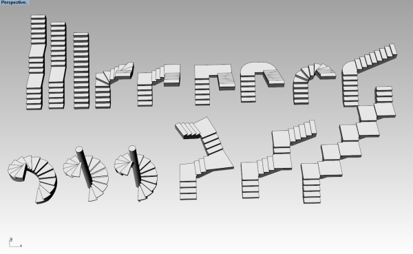

Treppenstile
vaTreppenStile
Symbol:
Treppe > Stileigenschaften
Tastenkombination:
Der Treppenstil definiert die Treppeneigenschaften. Folgende Parameter können für jeden Treppenstil definiert werden: Name, Attribute,
Typ, Stufen und Regeln.
Die Treppenstile werden von einer Deckenkomponente bestimmt, die jederzeit hinzugefügt oder gelöscht werden kann.
Um einen Treppenstil zu erzeugen, klicken Sie auf die Schaltfläche Neuer Stil… im Dialogfenster des Stilmanagers. Verwenden Sie den Assistenten, um die Treppenparameter einzugeben.
Allgemeine Bearbeitung des Stils
Sie können entweder den Befehl
vaTreppenStile verwenden, oder
- den Befehl vaStilEigenschaften ausführen, eine Treppe auswählen und mit Enter bestätigen, oder
- mit der rechten Maustaste auf die Schaltfläche
 klicken, eine Treppe wählen und mit Enter bestätigen, oder
klicken, eine Treppe wählen und mit Enter bestätigen, oder
- durch einen langen Klick mit der rechten Maustaste auf eine Treppe das dazugehörige Kontextmenü öffnen und Treppe > Stileigenschaften wählen, oder
- Alt, Umschalttaste oder Strg drücken und doppelt auf ein Treppenobjekt klicken.
Die Änderungen wirken sich auf
alle Elemente mit diesem Stil aus.
Objektspezifische Bearbeitung des Stils
- Geben Sie den Befehl vaEigenschaften ein, wählen Sie eine Treppe und bestätigen Sie mit Enter, oder
- Klicken Sie auf die Schaltfläche , wählen Sie eine Treppe und bestätigen Sie mit Enter, oder
- Wählen Sie eine Treppe aus, öffnen Sie durch einen langen Rechtsklick das Kontextmenü und wählen Sie darin Treppe > Eigenschaften, oder
- Doppelklicken Sie auf ein Treppenobjekt.
Die Änderungen wirken sich nur auf den Stil des
ausgewählten Elements aus.
Attribute
Mit den Attributen werden die Anzeige- und Druckeigenschaften eines Treppenstils und seiner Komponenten bestimmt. Gültige Attribute sind:
- Allgemein: Ebene, Sichtbarkeit und Material
- Projektion: Farbe, Linientyp, Liniendruckbreite und Liniendruckfarbe
- Schnitt: Farbe, Linientyp, Liniendruckbreite, Liniendruckfarbe, Muster, Musterskala, Musterwinkel und Musterfarbe
Typ
Es stehen Ihnen zwei Treppentypen zur Verfügung:
- Standard: Im Wendebereich der Treppe wird ein Podest eingefügt.
- Ausgeglichen: Der Wert für den Auftritt wird in der Mitte aller Stufen angewendet.
Stufen
Komponenten von Stufen:
- Trittstufe: Sichtbar in 3D- und Höhenansichten sowie Schnitten. Nicht sichtbar in der
Planansicht.
Die Eigenschaften der Trittstufe sind Stärke und Überstand.
- Setzstufe: Sichtbar in 3D- und Höhenansichten sowie Schnitten. Nicht sichtbar in der Planansicht
.
Die einzige Eigenschaft der Setzstufe ist ihre Stärke.
Regeln:
Aktivieren Sie diese Option, wenn Sie die Neigung der Treppe nach der Regel "2 Stufen + Auftritt" definieren möchten.
Das Ergebnis dieser Formel liegt dabei standardmäßig im Bereich zwischen 0,54 m und 0,7 m, was einer normalen menschlichen Schrittlänge entspricht.
Treppenkomponenten
Decke 
Treppen können über eine Treppendecke verfügen. Treppendecken können durch Rechtsklick auf den Stilnamen erstellt oder gelöscht werden (Neu >Treppendecke bzw. Löschen). Die Deckenstärke kann aus dem Geometriereiter aus bearbeitet werden, wenn die Deckenkomponente ausgewählt wird.
Die Treppendecke kann durch Einstellung ihrer Stärke in den VisualARQ-Eigenschaften im Rhino-Dialogfenster  bis zur Ausgangs- bzw. verlängert werden.
bis zur Ausgangs- bzw. verlängert werden.
- Obere Deckenstärke: Die notwendige Stärke der Treppendecke zur Verlängerung derselben zum Landungspunkt der Treppe.
- Untere Deckenstärke: Die notwendige Stärke der Treppendecke zur Verlängerung derselben zum Ausgangspunkt der Treppe.

Beispiele für gerade und Wendeltreppen.
HINWEIS: Treppenobjekteigenschaften sind nicht Teil des Treppenstils und können nicht im Einfügedialog definiert werden.
 Rechtsklick [Linksklick]
Rechtsklick [Linksklick]